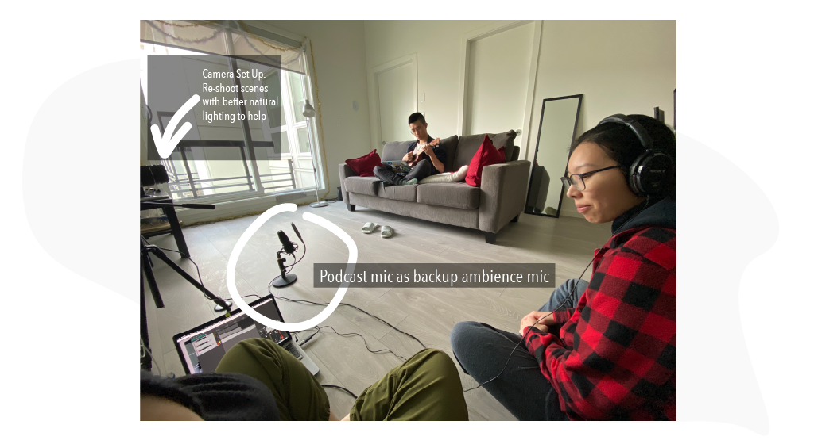
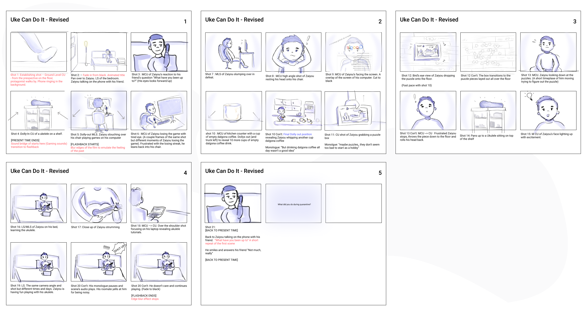

Uke Can Do It - Covid-19 Narrative Film
Watch NowIt has been a year since quarantine started (March 2020). What have you done? What plans changed? Is everything back to normal? In this project, we take a look at how Covid-19 changed our lives. In collaboration with the Museum of Vancouver, we took the challenge to document our view on what it has been like during this pandemic.
Logline: A lighthearted narrative film that follows an individual in quarantine discovering the wonders and the small joys of rekindling a hobby within the four walls of his home.
Project
SFU SIAT 344 - Moving Images
Project Members
Corissa Su & Emily Li
Timeline
8 weeks // Spring 2021
Tools
Adobe After Effects, Adobe Premiere Pro, Adobe Audition, Reaper
My Roles
Director of Photography, Sound Design , Editor, Visual Effect
Pre-Production
For Pre-production, I assisted in building the story based on the ideas Corissa and I discussed over voice calls. I built a rough script and logline to accompany our narrative film. We wanted to show something positive despite being in a pandemic. "Look on the bright side" In addition to the script, I helped Corissa with building our storyboard and moodboard. I assisted her in adding transitions and explaining the different scenes. The mood of our film is to be a bit comedic and ultimately leave a “feel-good” positive effect on our audience.
In preparation for filming, Corissa and I had to both agree with a visual aesthetics that we think best fit the mood of our film. Our vision was to create a warm earthy tone aesthetic to give the feeling of being at home. However, we also wanted some cool tones coming from our protagonist.

Production
Shooting from home was an added challenge in our project. Without the luxury of having the option to rent equipment from the school like in IAT 202, we had to improvise with the equipment we have at home. I used my old Canon DSLR and inexpensive mount shotgun microphone to film. The challenge in filming was I couldn't monitor the audio recorded on the microphone to the camera and we didn't have proper lighting equipment. For most of the scenes, we used a regular house lamp and some white sheer fabric to help light scenes.
Post-Production
Visual Effects
Visual Effects like tracking and animated timer helped convey our narrative better to the audience. We wanted to add a counter or timer on our rewind effect to indicate going back in time. At first, I wanted to make the entire flashback memory portion a foggy image but it didn't look as nice, so I went reversing the footage and adding some sound effects. I warped the reverse footage to mimic reversing video footage. I think the effect was very successful and was fun to make in the process.
Main Editing
Since Corissa did more work in the pre-production phase, I took on the responsibility of putting the main footage together and editing the audio for our film. From our feedback sessions, we got lots of positive responses and some critical feedback. I had to cut down the beginning scenes to make them faster and shorter so emphasize the process of our protagonist learning the ukulele as the main objective. With the helpful tips, I was able to cut down a significant amount of footage and condense our film.
In the earlier weeks, we had the opportunity to learn visual effects that we believe would be useful in our final film. I thought a tracking text and potentially a screen replacement may come in handy with some scenes in our final film. Corissa and I believed that screen replacement would be useful when we record our protagonist using his laptop. However, we end up cutting that scenes from the final edit. Below are screenshot of my practice visual effect work.
Before
After

With peer feedbacks, we had to change our initial ideas. We originally wanted to show the audience the abundance of dalgona coffee that our protagonist (Zaiyou) was having but the scene was too long. As a result, we decided to cut the shot shorter and change the tracking text.
Before
After
Photo Gallery
- 
- 
Reflection
This project has been an experience I won't forget. The pandemic has affected many lives and an emotionally draining process. With this project, I explored how different individuals took this time to improve themselves and learn new skills. Although it was nice in the beginning to have online classes and the flexibility of remote learning, it's hasn't been easy to stay on task and focus. I learned that you don't need all the fancy equipment to make a meaningful film. The "home video" quality added to the realistic instance that we are in right now.
I think if I were to this again with the same equipment, I would consider using more DIY objects. Because of the limited equipment we had, we couldn’t do many of the panning or dolly shots with our shaky hands. In the end, we had to make changes to our storyboard and keep most of our shots on a tripod. If we were able to plan and test out different methods of creating these camera movements without the equipment, I think it would add more visual aesthetics to our film.
Finally, I think Corrisa and I worked very well coordinating with each other online. We would send each other questions and constantly ask each other to review our edits. It was helpful to be able to screen share our work and voice call each other once a week.